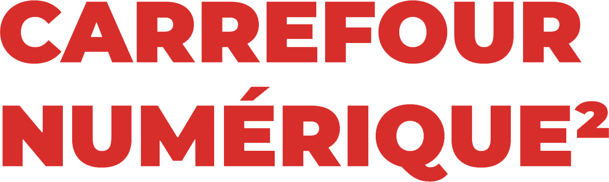

Paris, France
September 27, 2024
Sprints
Contribute to the PyData open-source ecosystem on the day following the conference
PyData Paris Sprints
At each PyData conference, our community dedicates one day to Sprints, where we work together on open-source projects to push our ecosystem forward. The PyData Paris sprint will be held on September 27, 2024 from 9.30 am to 5.00 pm.
Sprints are an informal part of the conference, where all are welcome to exchange ideas, hack on exciting projects, and create lasting connections. All programming levels are welcome at the virtual sprints.
Interested in leading a sprint at PyData Paris 2024? Sign up here!
Sprint Venue
The sprints will be held at Carrefour du Numérique (Level -1), at Cité des Sciences et de l’Industrie.

Important Sprint Dates
July 04, 2024: Sprint call for submissions opens
September 27, 2024 (from 9.30 am to 5.00 pm): Sprints
There is a lunch break around noon. Catering is not included for sprint day but there are several options around the venue and enjoy the sun in the park next to the venue.
Sprint FAQ's
What will you do as an attendee?
There is a variety of ways to contribute during the sprints session including testing code, fixing bugs, adding new features, and improving documentation. You could also contribute to an entirely brand new project that our ecosystem is missing. One of the best parts about the sprints is that you might also have the opportunity to work with authors and core contributors of your favorite open source packages, as well as, the opportunity to work alongside other developers who are just as excited as you are to make the PyData community even better.
What are the benefits of attending a sprint?
Make open source better!
Code alongside package authors/contributors, while learning from them.
Become a power user of a core package by gaining a deeper understanding of its inner workings.
Improve your GitHub profile.
Can I participate?
Yes! Sprints are open to everyone no matter what your programming level of experience.
Sprints are a great way to add your contribution to your favorite Python libraries and packages. Sprints are free of charge for all participants.
What projects do people usually sprint on?
Past projects at sprints include:
Matplotlib
scikit-learn
NumPy
Pandas
Jupyter
SymPy/SymEngine
conda-forge
Current registered projects for the sprint.
The following list of projects already signed up for the sprint:
pandas: Data analysis and manipulation tool
pyarrow: Columnar in-memory analytics
scikit-learn: Machine Learning in Python
skrub: Prepping tables for machine learning
geopandas: Geospatial data analysis extending pandas
Make Open Data: Modern Data Stack Open Source pour données publiques
RUSLE R-Factor: Statistical data imputting and spatial Geostatistical interpolation using Python
Don’t see your project or one that you think needs help?
Consider running your own sprint! Here is a checklist to evaluate if you would make a good sprint leader:
Your package is open source.
Your package is general enough to be useful to others in the PyData community.
Your package or package idea is mature enough to receive external contributions.
You have a strong enough grasp about your package to lead newcomers.
If you can answer "Yes" to all these questions, you shouldn’t hesitate to run your sprint via the following form.
On Friday morning, each sprint leader is given 2 to 3 minutes to pitch their package/idea to attendees in order to rally the troops.
How to “get ready”? You have never run a sprint before?
Don’t worry! We will provide guidance, and we will help to be successful.